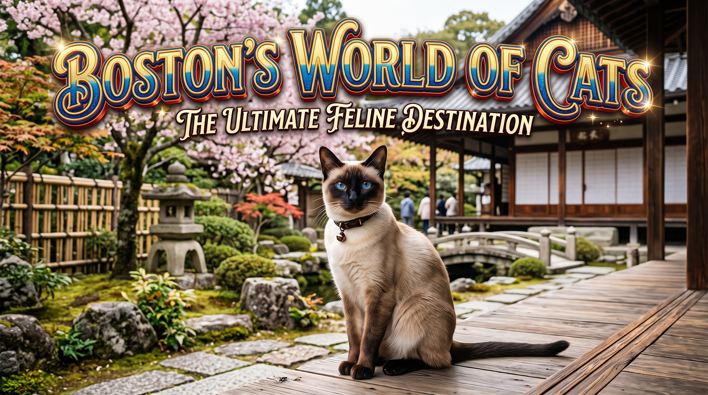

This is the domain Boston has built to tell you all about cats
Free-Floating Clavicle: Cats have vestigial clavicles (collarbones) embedded solely in pectoral muscle rather than articulated to the sternum or shoulder blade. Because the shoulders are not rigidly anchored to the skeleton, any opening wide enough to accommodate a cat's skull can accommodate the rest of its body